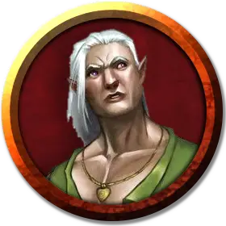

Меланнор Фелбранч
Melannor Fellbranch
Средний Гуманоид (Полуэльф), хаотично-добрый, именной НИП

Класс Доспеха 11 (16 с дубовой корой)
Хиты 27 (5к8 + 5)
Скорость 30 футов
| мод | спас | ||
|---|---|---|---|
| СИЛ | 10 | +0 | +0 |
| ЛОВ | 12 | +1 | +1 |
| ТЕЛ | 13 | +1 | +1 |
| мод | спас | ||
|---|---|---|---|
| ИНТ | 12 | +1 | +1 |
| МДР | 15 | +2 | +2 |
| ХАР | 11 | +0 | +0 |
Навыки Восприятие +4, Медицина +4, Природа +3
Чувства тёмное зрение 60 футов, пассивное Восприятие 14
Языки Общий, Друидический, Эльфийский
Опасность 2 (450 опыта)
Бонус мастерства +2
Особенности
Наследие фей. Меланнор совершает с преимуществом спасброски от очарования, и магия не может его усыпить.
Использование заклинаний. Меланнор является заклинателем 4-го уровня. Его базовой характеристикой является Мудрость (Сл спасброска от заклинания 12, +4 к попаданию атаками заклинаниями). У него подготовлены следующие заклинания друида:
• Заговоры (неограниченно): дубинка, искусство друидов, сотворение пламени.
• 1 уровень (4 ячейки): волна грома, опутывание, разговор с животными, скороход.
• 2 уровень (3 ячейки): дубовая кора, почтовое животное.
Действия
Боевой посох. Рукопашная атака оружием: +2 к попаданию (+4 к попаданию с дубинкой), досягаемость 5 футов, одна цель. Попадание: Дробящий урон 3 (1к6), или дробящий урон 6 (1к8) с дубинкой или при использовании двумя руками.
Описание
Главный знакомый персонажей в Изумрудном анклаве — Меланнор Фелбранч, дружественный, но лишённый чувства юмора садовник Фолконмера— усадьбы в одном квартале к югу от Башен Колатов. Фолконмер принадлежит благородным семьям Тарм и Фолкон.
Меланнор выдаёт задания с помощью заклинания животное-посланник, обычно посредством кошек и голу бей. Он вскоре предложит персонажам первое задание.